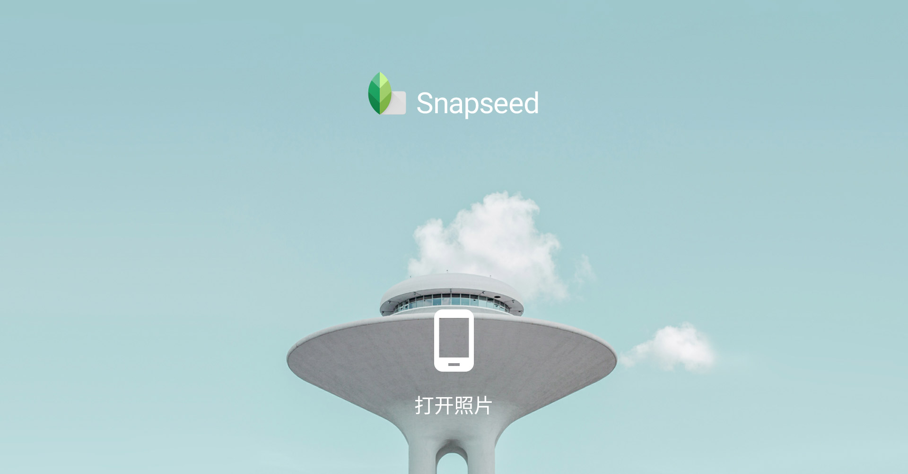
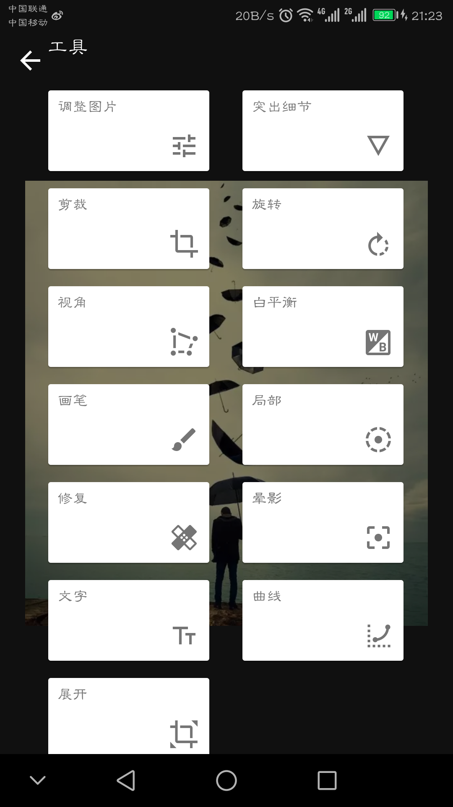
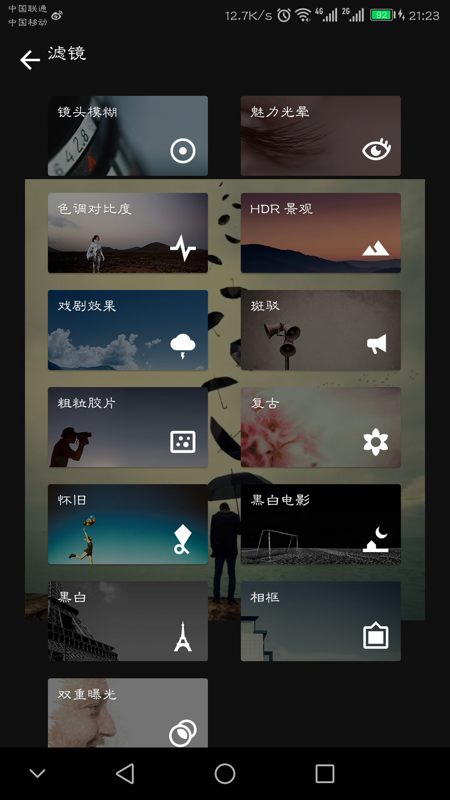

Snapseed
Snapseed是由谷歌发布的一款优秀免费图片编辑应用。自发布以来由于其易上手，修图效果出众而受到许多用户的欢迎。前一段时间Snapseed更新了 2.0 版本，这次更新又把人们的目光重新从缤纷繁杂的诸多图片后期应用中拉了过来，除了带来全新的操作界面之外，众多功能的改进也是值得称赞的。

特点


Snapseed是由谷歌发布的一款优秀免费图片编辑应用。自发布以来由于其易上手，修图效果出众而受到许多用户的欢迎。前一段时间Snapseed更新了 2.0 版本，这次更新又把人们的目光重新从缤纷繁杂的诸多图片后期应用中拉了过来，除了带来全新的操作界面之外，众多功能的改进也是值得称赞的。
特点